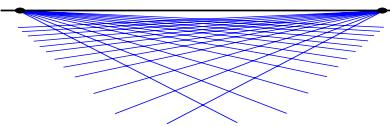
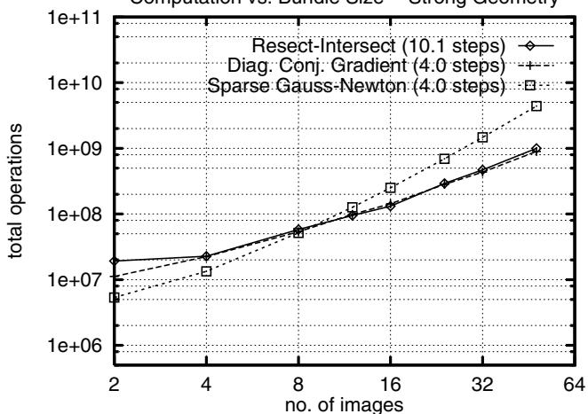

读完你应该能：① 说清 BA 把「结构」和「相机」一起最优化的含义；② 破除关于 BA 的四个常见误解；③ 把残差/代价函数和第一季第 0002 课的 MAP→最小二乘串起来；④ 知道为什么参数化是个大坑；⑤ 记住三类实现策略和那句「卡尔曼滤波只是半步迭代」的名言。
和前面课程怎么接
接 0002：0002 讲了 SLAM 的标准形式化与 MAP→非线性最小二乘，但只甩下一句「稀疏性决定后端能不能算得动」——本节把「BA 究竟在解什么」讲透，下一节（0019）才还这笔债。接 0003：0003 的「滤波→优化」主线，本节会用原文一句话正面回应。
1. 问题定义：结构和相机同时最优
原文（§1）对 BA 的定义非常干脆：它是「refining a visual reconstruction to produce jointly optimal 3D structure and viewing parameter estimates」——也就是同时把三维结构和相机观测参数都调到最优。注意这个「同时」是关键词：它不是先估结构、再调相机，也不是反过来，而是把所有变量塞进同一个大优化里一起算。
名字的来历也值得记住：每个三维特征会向看见它的各个相机射出一条「光线（bundle of light rays）」，BA 就是把这一束束光线和各个相机中心一起做最优调整，让它们收束得最好。所以它叫「光束法平差」。
和 independent model methods 的区别
原文特意把它和「独立模型法」对照：独立模型法会分步骤、分块地调整参数，而 BA 的固执之处就在于——它总是在同一个 bundle（光束束）里调整全部参数。正因如此，它才能拿到全局一致的最优解，而不是一堆各自为政的局部最优。
「参数化（parameterization）」说的是：用什么变量去表示一个三维点或一个旋转。这事儿听起来 trivial，却是原文（§2.2）反复警告的雷区。原则一句话：参数化要「as uniform, finite and well-behaved as possible near the current estimate」——在当前估计值附近尽可能均匀、有限、行为良好，让局部接近线性、代价函数局部接近二次。下面三个坑逐一讲。
坑①：远处点不能用欧氏坐标 $(X,Y,Z)$
如果用 $\Delta(XYZ)^\top$ 这种增量来更新三维点，原文说这「artificially cuts away half of the natural parameter space」——人为地砍掉了自然参数空间的一半。为什么？因为欧氏坐标在「无穷远」处有边界，而视觉几何本质上是投影（projective）的，远处点会跑到参数空间的边界甚至断裂。正确做法是用齐次坐标 $(XYZW)^\top$ 配合球归一化（spherical normalization），让参数空间绕成一个闭合、无边界的流形。

原图注（Fig. 1）：Vision geometry and its error model are essentially projective. Affine parametrization introduces an artificial singularity at projective infinity, which may cause numerical problems for distant features.（视觉几何及其误差模型本质上是投影的；仿射参数化会在投影无穷远处引入一个人为的奇点，可能给远处特征带来数值问题。） 怎么看这张图：盯住那条在「无穷远」被拉断的曲线——它直观说明用普通欧氏坐标 $(X,Y,Z)$ 表示很远的点时，坐标会逼近参数空间的边界甚至断裂。BA 里大量的点其实都很远，所以这个看似小的数学细节会演变成真实的数值灾难，Fig. 1 正是在为「远处点必须用齐次坐标」这句话背书。
原图注（Fig. 2）：Beware of treating any bell-shaped observation distribution as a Gaussian. … the Cauchy distribution has infinite covariance.（当心把任何钟形观测分布都当成高斯……柯西分布具有无穷协方差。） 怎么看这张图：这是 Fig. 2 三联图中的一张，它用对比告诉你「钟形 ≠ 高斯」。重点看 Cauchy 那条尾巴——它比高斯拖得长得多，意味着「极端离群值」出现的概率不可忽略。无限协方差意味着你不能用「方差」来 summarizing 它的散布，所以把外点当成普通高斯噪声会严重低估风险。
6. 三类实现策略对照
原文把 BA 的求解方法分成三大类（§6 / §7 / §8）。下面这张对照表是本节的核心骨架，建议你截图存下来。
原图注（Fig. 5）：An example of the typical behaviour of first and second order convergent methods near the minimum. This is a 2D projection of a small but ill-conditioned bundle problem along the two most variable directions.（一阶与二阶收敛方法在极小点附近典型行为的例子；这是一个小而病态的 BA 问题沿两个最可变方向的二维投影。） 怎么看这张图：横竖两个轴是「最让解晃动的两种方向」。二阶法（比如牛顿/LM）的等高线是被「压扁」着快速直冲谷底；一阶法（比如梯度下降）则沿着狭长的山谷慢吞吞地之字形挪。图越小越病态，这个差距越夸张——这就是「条件数差 → 一阶法跪」的几何直觉。
弱几何（strip，条带）：图像排成长条，每个特征大约只在 3 张重叠图里可见。原文形容这种网络「又长又薄、连得弱（long and thin, weakly connected）」，存在大幅度的低刚度「flexing（弯折）」模态，Hessian 条件数很差。

原图注（Fig. 6）：Relative speeds of various bundle optimization methods for strong 'spherical cloud' and weak 'strip' geometries.（各种 BA 优化方法在强『球形点云』与弱『条带』几何下的相对速度。） 怎么看这张图：重点看「弱几何 / strip」那一组：近似方法的表现急剧恶化，resection-intersection 甚至比「直接忽略全部稀疏性、用稠密 Cholesky」还慢。原文给的极端数据是：strip 下 16 张图以上跑 3000 次迭代都不收敛。这反过来证明——稀疏结构不是锦上添花，而是 BA 能不能算得动的命门。
原图注（Fig. 9）：A schematic history of bundle adjustment.（光束法平差的一段示意性历史。） 怎么看这张图：它把 BA 的发展画成一条时间线。请把视线停在 Brown 1958 那个节点——原文指出，Brown 早在 1958 年就已经用块矩阵技巧消掉了结构参数。这其实就是下一节要讲的 Schur 消元的雏形。所以「利用稀疏性」不是新发明，而是这篇综述要把它讲明白的老传统。
课后练习
展开查看答案
练习 1：用你自己的话解释「jointly optimal 3D structure and viewing parameter estimates」为什么强调「同时」。
答：因为 BA 把三维点坐标和相机位姿/内参全部塞进同一个优化里一起调，而不是先估点再调相机（或反过来）。只有「同时」优化，才能拿到全局一致的最优解；分开调容易各自陷入局部最优、彼此不兼容。